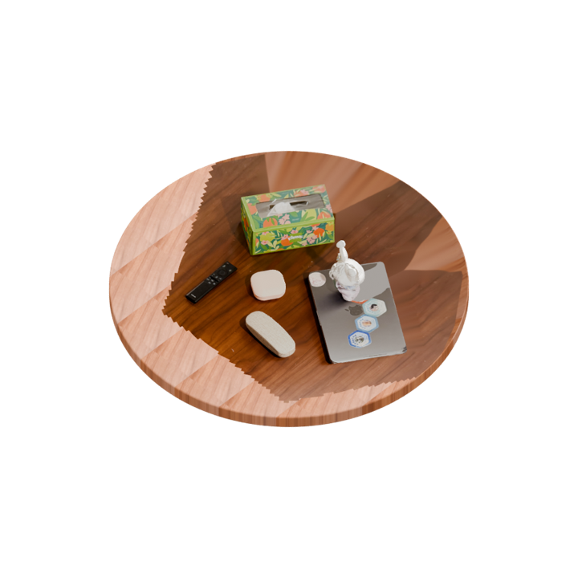
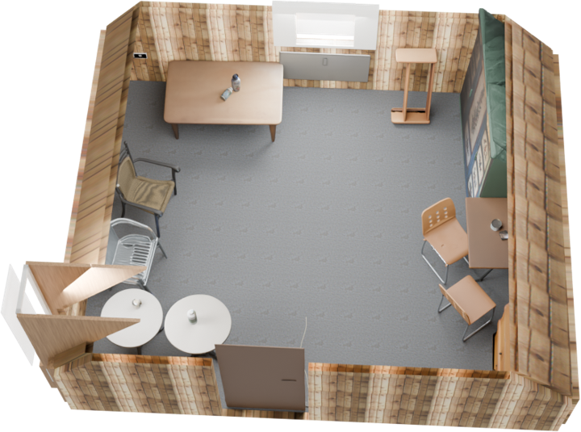
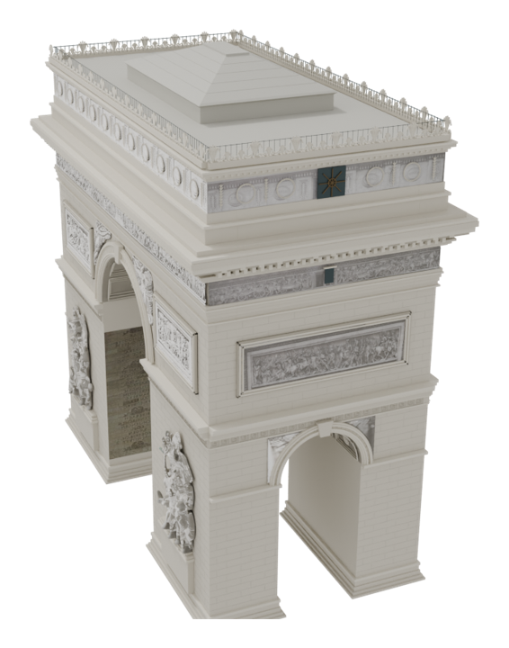
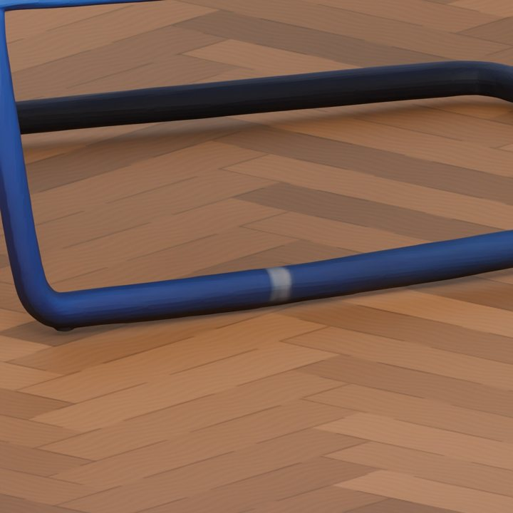
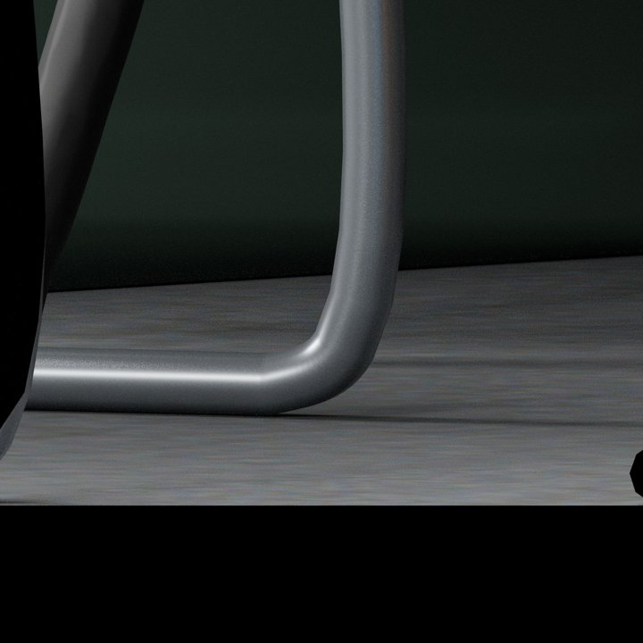

Photographs in. An editable scene out.
A coding agent takes the photos, picks a policy from its library, calls reusable skills and geometric tools, and keeps revising a Blender scene until visual, geometric and physical checks pass. The same agent and skill library work from a single photo of a table up to Internet photos of a monument.



Every reconstruction is a conversation with an agent.
You send photographs and a request. On the left, the agent explains what it is doing, loads skills and calls tools. On the right is what it is looking at right now. Choose a scene type, or let the three sessions play one after another.
—
Images are actual intermediate outputs from released runs. The transcript is a simplified view of the agent's steps; red lines show where a review check failed and triggered a revision. The tabletop and room sessions follow one run each (the room is SCRREAM scene 05). The landmark session combines steps from several landmark runs, labelled on each image.
Twenty-two skills, written once and shared.
A policy lists the steps for a class of scenes. A skill is a reusable procedure saved as a SKILL.md file. Policies point to skills instead of copying them, so one skill can serve a tabletop, a room and a landmark.
--- name: recon-isaacsim-physics description: Run mandatory desktop-style Blender Bullet checks for indoor reconstruction, [...] Preserve all-body coverage, source-bound support/contact evidence and simulation-tested pose refinement; simulation does not establish photo accuracy [...] --- # Physics-grounded reconstruction ## Required indoor default — user adoption 2026-11-04 Default executable: `indoor_physics.py verify` → saved-file `blender_physics_check.py` in CPU Slurm. Check [...] the actual final delivery file, with every physical instance [...] Actual close visual/photo inspection is mandatory regardless of numeric success. ## Bind the physical scene ## Initialize and refine with feedback ## Select the correct executable/protocol ## Evidence and validation
When it applies. The front matter says what the skill is for, so the agent can decide when to load it.
Which tools it calls. The skill names the actual executable, so the agent runs the pinned simulator instead of guessing poses or dynamics.
How the output is checked. Every physical instance in the saved file is checked, and close visual inspection is required even when the numbers pass.
Where it came from. Dated sections record when a rule was adopted and why. This skill's history is the story in chapter 03.
Excerpt from skills/recon-isaacsim-physics/SKILL.md (117 lines); [...] marks omissions.
Names and descriptions come from the front matter of each skills/*/SKILL.md in release v-20261108; grouping follows the supplement's skill table. Tags show typical use under the released policies; the task policy decides which skills apply in each run. Click a card for details.
A skill learned on tabletops, reused in rooms.
After each run the agent keeps a record of failed checks, attempted fixes and outcomes. A recurring failure can lead it to propose a new skill. Each candidate is tested end to end before it enters the library.
This tabletop passed the external physics check, but objects in the saved Blender file are not supported correctly.
 contact close view
contact close view physics views
physics viewsProposing a new skill, saved-state support/physics: reopen the saved file, simulate 5 s in Bullet, check every body.
✓ tested end to end → added to the libraryRooms have the same support requirements. The room policy points to the skill instead of copying it.

chair leg on floor
foot contactA reimplemented REST3D support-tree candidate overlapped existing support handling and showed no benefit.
✗ rejected → not addedObject stability on SCRREAM
Share of stable objects, before and after the room policy adopted the skill.
Mean stability gain on three rooms, with geometry and camera accuracy nearly unchanged (F-score +0.027, camera error +0.1).
Mean stability gain on two unseen rooms (93.5% vs 39.1% and 60.5% vs 19.8% stable).
Recorded tokens on two four-scene GraspClutter6D sequences when the agent revises its own policy and skills, compared with a frozen library.
Candidates that show no benefit in testing do not enter the library.
Sixty-six deliveries, from one agent.
Every final scene from the paper, rendered from its saved Blender file. Open the gallery to compare each one with its input photo, along with token and GPU-hour costs.
The same three sessions, in under three minutes.
A narrated walk-through of a tabletop, a room and a landmark run, with the skills the agent loads at each step.